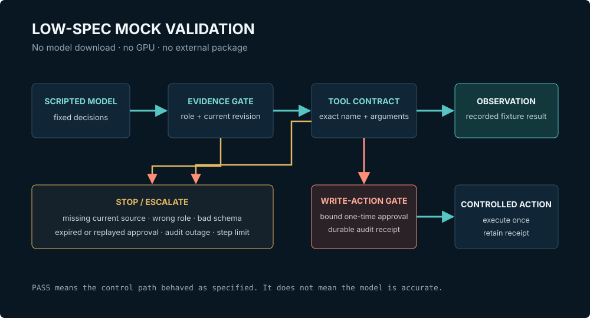

A weak PC changes the test order, not the need for testing. LangChain and LangGraph can be wired without a GPU, but a local model service still needs model files, memory, and runtime packages. This lab removes that dependency and asks a narrower question first: when evidence is stale, approval is wrong, the audit sink is down, or the loop refuses to end, does the application stop in the right place?
A team sees that its PC cannot serve the planned model and puts every agent test on hold. The useful correction is to split two claims that had been bundled together. The machine cannot measure production answer quality, but it can still verify deterministic state transitions, permissions, payload binding, rejection paths, and escalation. The scenario is constructed; the test output below comes from the repository lab.

What this lab proves, and what it cannot
The mock is closer to an interlock checkout than a process-capability run. In a fab, engineers can verify valve sequencing, permissives, and abort behavior before processing a product wafer. That does not prove film quality. Here, the deterministic model verifies application controls without claiming anything about language quality.
| Can verify on this PC | Still needs a real model or target hardware |
|---|---|
| Current-revision and role filters | Semantic retrieval recall and embedding quality |
| Exact tool names and arguments | Whether the model chooses the correct tool |
| Approval scope, expiry, and replay rejection | Hallucination and instruction-following rates |
| Audit outage and bounded-loop behavior | Latency, throughput, VRAM, context, and concurrency |
This boundary matters. A passing mock test means the application behaved as specified for the fixture. It does not turn a small scripted object into evidence that an LLM is accurate, safe, or useful.
Folder, requirements, and first run
The implementation lives in labs/mock-ai-validation/. It uses Python 3.10 or newer and only the standard library. There is no virtual environment requirement, network request, model download, or pip install.
labs/mock-ai-validation/
|-- mock_ai_lab/
| |-- __init__.py
| `-- core.py
|-- tests/
| `-- test_controls.py
|-- artifacts/
| `-- latest_run.json
|-- README.md
`-- run_demo.pyStart with the tests. A demo is useful only after the rejection cases are green.
Set-Location .\labs\mock-ai-validation
python --version
python -m unittest discover -s tests -v
python run_demo.pyPass: Python is 3.10+, all eight tests report ok, the demo ends with status: escalated, and artifacts/latest_run.json is created. Stop: do not reinterpret a failed rejection test as a harmless mock limitation. Fix the control or the fixture first.
The published source files are available as the lab README, the demo runner, and the test suite.
The eight tests are an operating contract
| Test | Observable pass condition | Failure it prevents |
|---|---|---|
| Current + authorized retrieval | Only revision 8 reaches the engineer fixture | Superseded or role-restricted evidence entering context |
| Withhold on no source | An unauthorized-only match returns an empty list | Filling an evidence gap with convenient text |
| Exact tool contract | An undeclared sql argument raises an error | Turning a narrow lookup into an open query surface |
| Thread binding | A token issued for thread 17 fails on thread 99 | Moving approval to another pending action |
| Audit fail-closed | The write handler is never called | Executing while the durable record is unavailable |
| One-time approval | The second use is rejected; action count remains one | Duplicate state changes |
| Step limit | Result is escalated with no answer field | Printing the last tool output as a final answer |
| Approved success | One action and one audit receipt are retained | A happy path that bypasses the same controls |
Approval binds the whole pending action
The token is not merely “permission to create a ticket.” Its signed context includes the workflow thread, interrupt, requester, target resource, exact action, payload hash, reviewer, and expiry. The service then consumes the token once.
context = ApprovalContext(
thread_id="thread-17",
interrupt_id="interrupt-3",
requester="engineer-42",
resource="ticket-system/module-a",
action="create_ticket",
payload_sha256=payload_hash(arguments),
reviewer="shift-lead-7",
expires_at=NOW + 300,
)If any field changes, verification fails. If the audit sink cannot produce a receipt, execution stops before the state-changing handler. If the same token is replayed, the action count remains one.
Why the demo deliberately ends in escalation
The demo repeats a harmless read_alarm request. After three steps, it does not print the final observation as though the agent had solved the problem. The retained artifact is explicit:
{
"status": "escalated",
"steps": 3,
"reason": "step_limit_reached",
"observations": [
{"tool": "read_alarm", "result": {"alarm_id": "E-1420", "state": "active"}},
{"tool": "read_alarm", "result": {"alarm_id": "E-1420", "state": "active"}},
{"tool": "read_alarm", "result": {"alarm_id": "E-1420", "state": "active"}}
]
}That result is less impressive than a fluent paragraph, and much more useful for debugging. The repeated observation, step count, and stop reason tell an engineer exactly which boundary fired.
Replacing the mock with a real model later
- Keep the retriever fixture, tool registry, approval service, audit behavior, and assertions unchanged.
- Replace only
ScriptedModel.next()with an adapter for Ollama, vLLM, or an approved remote endpoint. - Run the deterministic suite first. Then add a separate evaluation set for tool selection, grounded answers, refusal behavior, latency, and resource use.
- Record model ID, artifact hash, runtime, prompt version, hardware, context, and concurrency with the result.
Pass to live-model testing when all deterministic controls still pass and the target environment has a named owner and rollback path. Stop when connecting the model requires weakening a schema, bypassing an approval, skipping an audit receipt, or hiding an unresolved step-limit event. Limit: even a live-model pass is evidence for that model and configuration, not every future release.
Continue with the consumer-GPU lab when hardware becomes available, and use the HITL control design before exposing a state-changing tool.